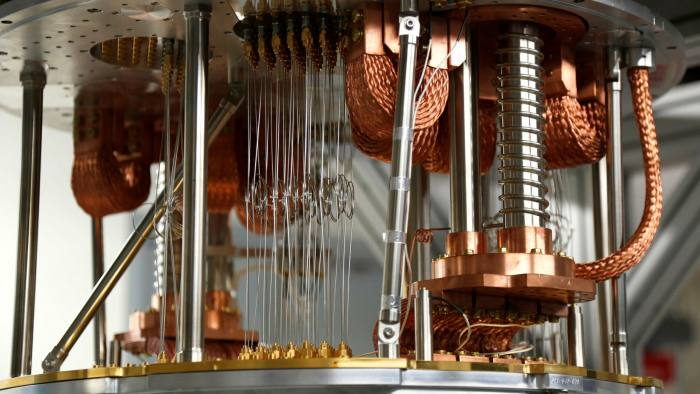

What is quantum computing?
What is quantum computing?
Quantum computing is a rapidly-emerging technology that harnesses the laws of quantum mechanics to solve problems too complex for classical computers.
Today, IBM Quantum makes real quantum hardware -- a tool scientists only began to imagine three decades ago -- available to thousands of developers. Our engineers deliver ever-more-powerful superconducting quantum processors at regular intervals, building toward the quantum computing speed and capacity necessary to change the world.
These machines are very different from the classical computers that have been around for more than half a century. Here's a primer on this transformative technology.
Explore IBM Quantum systemsWhy do we need quantum computers?
For some problems, supercomputers arent that super.When scientists and engineers encounter difficult problems, they turn to supercomputers.
These are very large classical computers, often with thousands of classical CPU and GPU cores.
However, even supercomputers struggle to solve certain kinds of problems.
If a supercomputer gets stumped, that's probably because the big classical machine was asked to solve a problem with a high degree of complexity.
When classical computers fail, it's often due to complexity.
Complex problems are problems with lots of variables interacting in complicated ways.
Modeling the behavior of individual atoms in a molecule is a complex problem, because of all the different electrons interacting with one another.
Sorting out the ideal routes for a few hundred tankers in a global shipping network is complex too.
Some complex problems are less obvious:
A supercomputer would struggle to find the ideal seating arrangement of even 10 guests at a dinner party if they don't all want to sit next to one another, or to find the prime factors of a big number.
Why quantum computers are faster
Let's look at example that shows how quantum computers can succeed where classical computers fail:A supercomputer might be great at difficult tasks like sorting through a big database of protein sequences. But it will struggle to see the subtle patterns in that data that determine how those proteins behave.
Proteins are long strings of amino acids that become useful biological machines when they fold into complex shapes. Figuring out how proteins will fold is a problem with important implications for biology and medicine.
A classical supercomputer might try to fold a protein with brute force, leveraging its many processors to check every possible way of bending the chemical chain before arriving at an answer. But as the protein sequences get longer and more complex, the supercomputer stalls. A chain of 100 amino acids could theoretically fold in any one of many trillions of ways. No computer has the working memory to handle all the possible combinations of individual folds.
Quantum algorithms take a new approach to these sorts of complex problems -- creating multidimensional spaces where the patterns linking individual data points emerge. In the case of a protein folding problem, that pattern might be the combination of folds requiring the least energy to produce. That combination of folds is the solution to the problem.
Classical computers can not create these computational spaces, so they can not find these patterns. In the case of proteins, there are already early quantum algorithms that can find folding patterns in entirely new, more efficient ways, without the laborious checking procedures of classical computers. As quantum hardware scales and these algorithms advance, they could tackle protein folding problems too complex for any supercomputer.
How complexity stumps supercomputers
Proteins are long strings of amino acids that become useful biological machines when they fold into complex shapes. Figuring out how proteins will fold is a problem with important implications for biology and medicine.
A classical supercomputer might try to fold a protein with brute force, leveraging its many processors to check every possible way of bending the chemical chain before arriving at an answer. But as the protein sequences get longer and more complex, the supercomputer stalls. A chain of 100 amino acids could theoretically fold in any one of many trillions of ways. No computer has the working memory to handle all the possible combinations of individual folds.
Quantum computers are built for complexity
Quantum algorithms take a new approach to these sorts of complex problems -- creating multidimensional spaces where the patterns linking individual data points emerge. Classical computers can not create these computational spaces, so they can not find these patterns. In the case of proteins, there are already early quantum algorithms that can find folding patterns in entirely new, more efficient ways, without the laborious checking procedures of classical computers. As quantum hardware scales and these algorithms advance, they could tackle protein folding problems too complex for any supercomputer.
How do quantum computers work?
Quantum computers are elegant machines, smaller and requiring less energy than supercomputers. An IBM Quantum processor is a wafer not much bigger than the one found in a laptop. And a quantum hardware system is about the size of a car, made up mostly of cooling systems to keep the superconducting processor at its ultra-cold operational temperature. A classical processor uses bits to perform its operations. A quantum computer uses qubits (CUE-bits) to run multidimensional quantum algorithms.Superfluids
Your desktop computer likely uses a fan to get cold enough to work. Our quantum processors need to be very cold about a hundredth of a degree above absolute zero. To achieve this, we use super-cooled superfluids to create superconductors.Superconductors
At those ultra-low temperatures certain materials in our processors exhibit another important quantum mechanical effect: electrons move through them without resistance. This makes them "superconductors." When electrons pass through superconductors they match up, forming "Cooper pairs." These pairs can carry a charge across barriers, or insulators, through a process known as quantum tunneling. Two superconductors placed on either side of an insulator form a Josephson junction.Control
Our quantum computers use Josephson junctions as superconducting qubits. By firing microwave photons at these qubits, we can control their behavior and get them to hold, change, and read out individual units of quantum information.Superposition
A qubit itself isn't very useful. But it can perform an important trick: placing the quantum information it holds into a state of superposition, which represents a combination of all possible configurations of the qubit. Groups of qubits in superposition can create complex, multidimensional computational spaces. Complex problems can be represented in new ways in these spaces.Entanglement
Entanglement is a quantum mechanical effect that correlates the behavior of two separate things. When two qubits are entangled, changes to one qubit directly impact the other. Quantum algorithms leverage those relationships to find solutions to complex problems.Quantum computing hype vs. reality
IBM Quantum is your partner to cut through the hype surrounding quantum computing, and to position your institution to leverage this emerging technology for competitive advantage. Here's what business leaders need to understand about quantum computing today.
Quantum computers are poised to transform the way you work in research. Classical computers get bogged down trying to model natural systems, including chemical reactions and folding proteins. Quantum computers offer a new set of tools to understand the universe.
Programming for quantum computers doesn't require extensive retraining or new coding languages. But it will give you access to an entirely new computing paradigm all the same. Here are the basics you need to know to get started with quantum development today.
Learn quantum computing programming
You can explore the world of quantum computing for free on IBM Cloud, and learn to write quantum code - starting with absolutely zero experience. If you're a developer, jump right in by joining the world's largest quantum developer community and start today. IBM's quantum computers are programmed using Qiskit (link resides outside of ibm.com), a software development kit in Python. Qiskit is free, open source, and accompanied with a comprehensive textbook and semester-length course Learn quantum computingRelated solutions
Quantum software and programming tools
Our on-location systems and cloud services are tailored to meet the needs of global industry, institutions, and governments.
Explore tools for quantum computingIBM Quantum services
IBM Quantum services offer every level of developer access to our world-leading quantum hardware and the software necessary to use it.
Explore IBM Quantum ServicesQuantum computing systems
Our on-location systems and cloud services are tailored to meet the needs of global industry, institutions, and governments.
Explore quantum computing systems